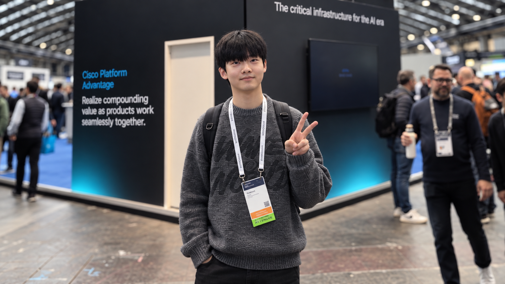

Agent & Data
정보를 수집하고 필요한 신호를 골라내는 도구를 만들었습니다.
ABOUT
문제를 발견하면 작은 형태로 먼저 만들어 보고, 실제로 작동하는지 확인하는 과정을 즐깁니다.

현재 광운대학교 정보융합학부에서 공부하며, Deep Imaging and Graphics Lab의 학부연구생으로 활동하고 있습니다.
관심 분야는 Vision과 Backend입니다. 아이디어를 제품으로 옮기는 과정에서 데이터 흐름과 사용자 경험이 만나는 지점을 살펴봅니다.
LinkedIn에서 더 보기SKILLS
Vision은 현재 탐구 중인 관심 분야입니다.
정보를 수집하고 필요한 신호를 골라내는 도구를 만들었습니다.
API와 실시간 협업 기능을 구현하고 배포했습니다.
아이디어를 화면과 상호작용으로 빠르게 구체화했습니다.
PROJECTS
GitHub에서 공개 저장소를 불러와 관심 분야와 연결된 작업을 보여줍니다.